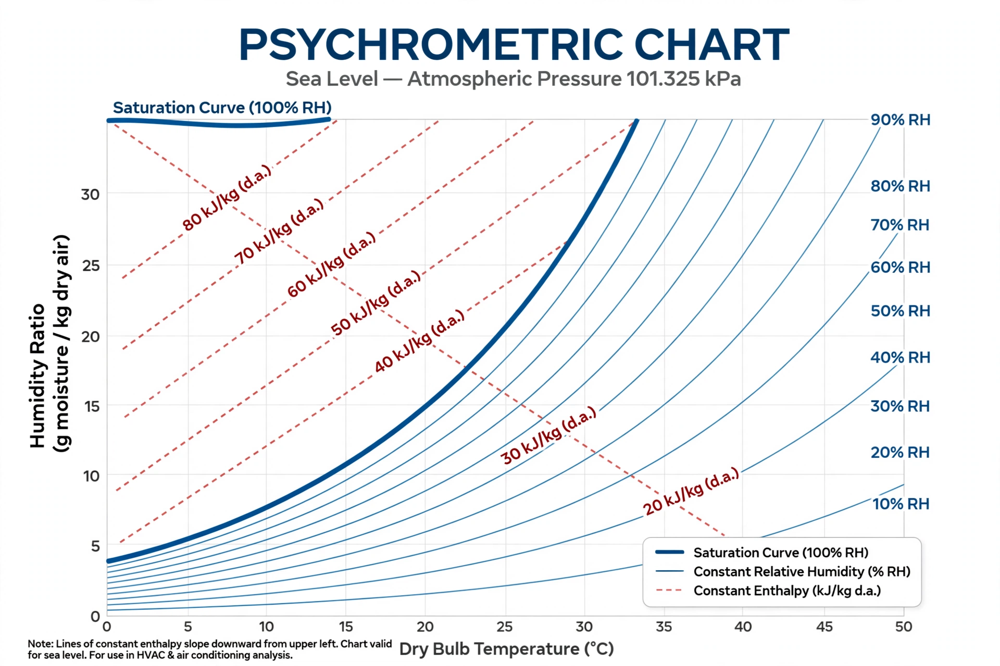

| Field | Mechanical engineering, HVAC, thermodynamics |
|---|---|
| Studies | Physical and thermodynamic properties of gas–vapour mixtures (esp. moist air) |
| Key properties | Dry-bulb temperature, wet-bulb temperature, dew point, relative humidity, enthalpy, specific volume |
| Key tool | Psychrometric chart |
| Pioneer | Willis Carrier (1911) |

Psychrometrics (or psychrometry) is the branch of engineering concerned with the physical and thermodynamic properties of gas–vapour mixtures. In practice it deals overwhelmingly with moist air — the mixture of dry air and water vapour — and is fundamental to heating, ventilation and air conditioning (HVAC) design, meteorology, drying processes and human thermal comfort.
The psychrometric chart, first published by Willis Carrier in 1911 ("Rational Psychrometric Formulae"), graphs these properties against one another at a fixed pressure, allowing engineers to visualise air-conditioning processes — sensible heating and cooling, humidification, dehumidification, evaporative cooling and mixing of air streams — as paths across the chart. ASHRAE publishes standard charts for sea-level and other pressures.
Psychrometric calculations determine cooling and heating loads, coil selection, cooling-tower performance, industrial drying rates, and comfort conditions in buildings; wet-bulb temperature is also a key metric in assessing dangerous heat stress.